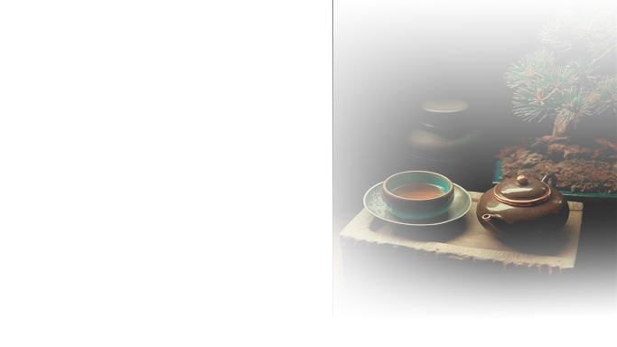
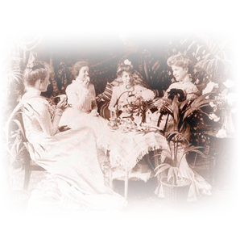
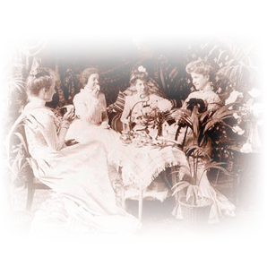
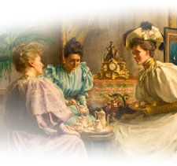
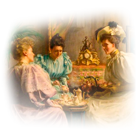
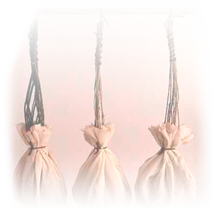
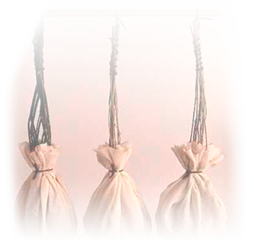
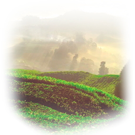
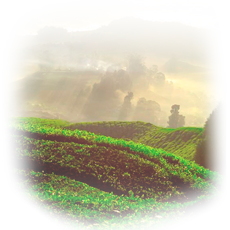

Te - viden
Medova te er blandet af de fineste håndplukkede topskuds-teer fra de bedste tedistrikter i verden.


Sådan brygger du den bedste kop Medova te!
- Brug altid vand fra den kolde hane
- Skold kande eller kop med kogende vand
- Hæld spilkogende vand over tebrevet
- Lad teen trække 2-3 minutter
- Sukker fremhæver den fine tesmag


En gammel legende fortæller, at den kinesiske kejser, Shen Nungs en dag ville hvile sig under et træ, da der pludselig falder nogle blade ned i hans gryde. En vidunderlig duft spredte sig, og her blev teen fundet


I 1610 blev teen bragt til Europa via et Hollandsk skib. Mellem 40 og 50 år senere dukkede den første originale te-kande op på dansk grund. Det var en specielt designet kinesisk kande, der blev foræret til Frederik 3. i 1656
 

I har alle sikkert hørt om begrebet five o'clock tea. Et koncept, der oprindeligt stammer fra England omkring 1841. Hertuginden af Bedford beder sin stuepige om et stykke brød og lidt kage til hendes te, og da kl bliver ca. 17 er der serveret. Begrebet er nu blevet kendt verden over
 
Nu til dags har mange te-producenter designet deres indpakning i rige og skarpe farver. Dette kan spores tilbage til købmanden Thomas Lipton, der startede et af verdens største te-producerende selskaber. Han begyndte i 1888 at sælge sin te i farvestrålende æsker

I dag er te-posen ikke et særligt specielt produkt. Men tilbage i år 1903, da tehandleren Thomas Sulivan begyndte at fylde små silkeposer med vareprøver var den almene te-pose ikke udbredt. Folk misforstår hurtigt meningen med posen og begynder at putte den i deres kogende vand, og te-posen bliver opfundet ved en fejltagelse
 

Mange tehandlere måtte dreje nøglen om efter krigen og dem der blev måtte finde sig i store pristigninger på te. Med te-brevets hurtige udbredelse fulgte her en årrække hvor mange måtte indfinde sig med den hurtige løsning, ofte gerne fra Medova


I dag har te fået en mere fremtræden rolde i vores hverdag. Priserne er ikke så høje som de har været og kvaliteten er blevet bedre. Danskerne ligger nr. 13 på listen over lande, der drikker mest te, med et forbrug på 0,2 kg pr indbygger/årligt.


BKI tager ansvar ved at producere og sælge Fairtrade mærkede produkter.
 


Vi støtter Fairtrade, fordi vi ønsker at bidrage til, at vores producenter får en fair mindstepris for råvaren, arbejder under ordentlige forhold og kan arbejde med at forbedre deres forretning.
Butik

Medova Te
29,95,-

Pris
29,-
Fragt
0,-
Total
29,-